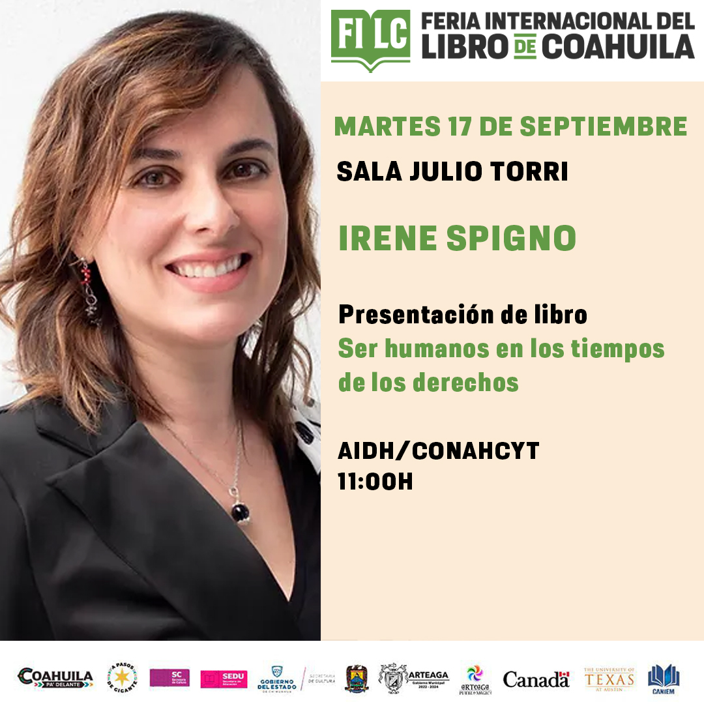

El día 17 de Septiembre de 2024 a las 11 de la mañana en la Feria Internacional del Libro de Coahuila (FILC) en la sala Julio Torri, se presento el libro "Ser humanos en los tiempos de los derechos" escrito por Irene Spigno, en la presentacion se encontraba presentes: Jesús Octavio Pimentel Martínez el actual Rector de la Universidad Autónoma de Coahuila (UAdeC) , Iván Garza García Magistrado de la Sala Civil y Familiar, Gricelda Elizalde Castellanos Magistrada Presidenta de la Sala Penal y por último Luis Efrén Ríos Vega Magistrado de la Sala Penal. 
El libro esta dividido en 6 partes, la primera llamada "La justicia a la que quisiera acceder", la segunda "De las mujeres poderosas y otras brujas", la tecera "La importancia del diálogo", la cuarta "La marea morada", la quinta "Educar con empatía para proteger los derechos y transformar el mundo" y la sexta "Instituciones que transforman".El libro nace de que en muchas partes del mundo se estan experimentando despertares de conciencia y espiritualidad, El derecho establece reglas, herramientas para que sean cumplidas y mecanismos que sancionan su incumplimiento, al mismo tiempo que la sociedad se ordena y disciplina a través de las reglas jurídicas, mientras el contexto social cambia y evoluciona de una manera continua.
Irene opina que uno de los mas grandes errores de la ciencia jurídica es que se les olvida que hay seres humanos involucrados y que las personas no son siplemente un nombre o apellido, nacionalidad o pertenencia religiosa.Ni una edad, peso o estatura, ni nos identificamos únicamente a través de nuestro género u orientación sexual.Las personas son sus emociones.Las emociones llegan a tener un impacto en la vida cotidiana, y de manera tan profunda, que casi pueden llegar a contolar las vidas de las personas.
En el libro irene comparte una serie de reflexiones que adquirió de sus vivencias y experiencias, ella busca que el libro pueda servir para las personas que lo lean como un mensaje o una señal que puedan necesitar.
En mi opinion